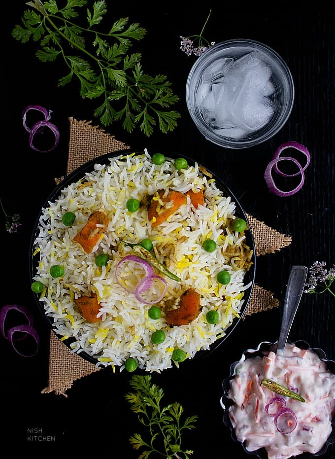

How to make Biriyani

Description
Veg biryani is a spiced mix of vegetable and rice, traditionally cooked over an open fire in a leather pot. It is combined in different ways with a variety of components to create a number of highly tasty and unique flavor combinations.
Ingredients
- Ghee
- Cinnamon (1 Inch Pieces, Crushed)
- Cloves (Coarsely Crushed)
- Green Cardamom (Coarsely Crushed)
- Star Anise (Coarsely Crushed)
- Whole Peppercorns (Coarsely Cushed)
- Black Cardamom (Coarsely Crushed)
- Onion (Sliced)
- Ginger-Garlic Paste
- Red Chilli Powder
- Turmeric Powder
- Coriander Powder
- Tomato (Sliced)
- Chopped Vegetables (Carrots, Beans, Cauliflower, Potatoes, Peas)
- Water
- Rice
- Salt (To Taste)
- Coriander Leaves (Chopped)
Steps
- Prepare ingredients as mentioned in the list.
- Heat the ghee in a pan, add the cinnamon, cloves, green cardamom, star anise, peppercorns and black cardamom. Then, add the onions and sauté till they turn golden-brown.
- Add the ginger-garlic paste and stir-fry till the raw smell is gone. Add the red chilli powder, turmeric powder and coriander powder and sauté for a minute.
- Add the tomatoes and cook till they are soft. Add all the vegetables and mix well.
- Add the water, crumbled MAGGI cubes, mint leaves and coriander leaves. Mix well and add salt to taste. Bring to boil and add rice.
- Reduce flame to the lowest and cook covered till both the rice and vegetables are done.
- Serve hot with raita.